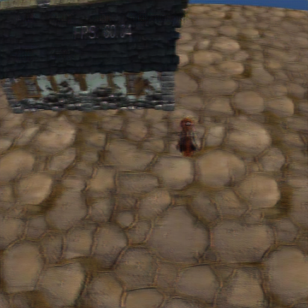

Description: Based on our detector, we compared the actual picture of the right eye with the predicted picture, and finally detected the problem of Stereoscopic Visual Inconsistencies in this set of VR views.The following are examples of left and right eye screenshots in VR games where we have detected abnormalities.

Actual Image - Left Eye
Actual Image - Right Eye

Predicted Image - Right Eye